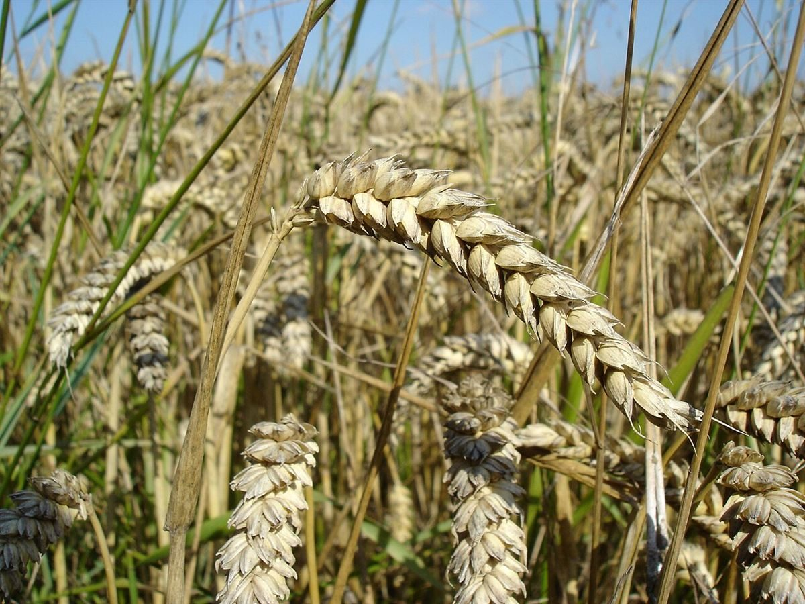

火曜日の欄 / 店のこと
店のこと
お店について確認できているのは、所在地・電話番号・Instagramのアカウントです。
このページの「想像してみる」部分は、制作側が想像して書いたものです。お店の実際の様子・考え・メニューとは関係がありません。
確認できていること
- 店名は「ぱんや MACOCO」、業種はパン屋
- 所在地は福岡県八女市納楚５７６−４(〒834-0004)
- 電話番号は0943-23-0023
- Instagramは @macocopan
- 営業時間・定休日・メニュー・価格・ご予約・駐車場は準備中

想像してみる
「ぱんや」という名前から
由来は分かりません。制作側は、まず名前の字面から「パンの屋号を、そのまま掲げた店かもしれない」と想像しました。小麦や粉、窯といった言葉を思い浮かべながら、写真を選んでいます(実際のお店の姿ではありません)。


ページの作り
このサイトの見かた
上の曜日タブは、ページの並びを月〜金に見立てたもので、営業日とは関係ありません。営業時間と定休日は準備中です。